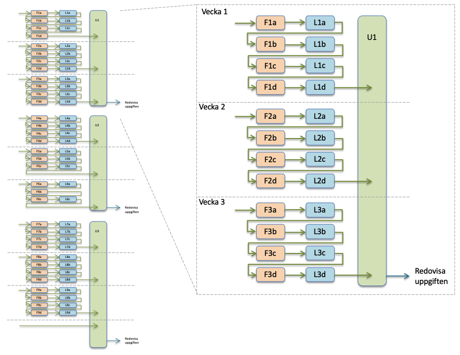

Kursen är en introduktionskurs i webbteknik och tar upp områden som informationsarkitektur och användarcentrerad design för webbutveckling samt grunderna i klientbaserad teknik (front-end). Det finns många praktiska moment där språken HTML och CSS introduceras för att skapa webbsidor.
Olika kurstillfällen
Kursen ges för flera olika studentgrupper. På höstterminen ges den för ett antal program både i Kalmar och Växjö samt som fristående kurs i Växjö. På vårterminen ges den som en fristående distanskurs.
- Interaktionsdesigner (ID), 180hp
- Webbprogrammerare (WP), 120/180hp
- Interaktiva medier och webbteknologier (IMWT), 180hp
- Fristående kurs (FK), 7,5hp
Programmen ID och WP ges både på campus i Kalmar och på distans. Programmet IMWT ges på campus i Växjö. Fristående kurs ges på campus i Växjö på hösten och som distanskurs på våren. I programmen ligger kursen i den första terminen i årskurs 1 och är alltså en av de första kurserna i utbildningen.
I augusti finns det uppsamling av restuppgifter för båda kurstillfällena. Se mer info om detta på sidan om examination.
Nätbaserat lärande
Oavsett vilken grupp du tillhör, används till stor del nätbaserat lärande genom denna webbplats och kursens forum på nätet. Allt material på denna webbplats är gemensamt för alla kurstillfällen. Här finns inspelade föreläsningar, laborationer (tutorials), uppgifter, m.m.
Börja med att orientera dig på webbplatsen, genom att bläddra igenom de olika sidorna. Se speciellt sidan med veckoplanen, för kursens upplägg.
Block och kursmaterial
Kursen är uppdelad i tre block. Varje block består av ett antal föreläsningar, laborationer och en uppgift, fördelat över ett antal veckor. Föreläsningar och laborationer är uppdelade i delar, där du varvar föreläsning och laboration.
Du bör gå igenom materialet i den ordning som pilarna i figuren visar. Så varje vecka börjar du med den första föreläsningen och sedan varvar du föreläsningar och laborationer samtidigt som du läser i boken. Läsanvisningar finns i veckoplanen. Då du gått igenom veckans alla föreläsningar och laborationer, tar du en del av blockets uppgift. På varje uppgiftssida finns förslag på lämplig uppdelning, så att du gör en del per vecka. Sista veckan i blocket skickar du in din redovisning av uppgiften. Se mer om deadlines för redovisningar på sidan Examination.
Föreläsningar
Varje veckas föreläsningar finns på var sin sida, där det finns filmer och länkar till zip-filer med de exempel som används. Det är viktigt att du laddar ner och själv experimenterar med exemplen. Det är genom egna experiment som du lär dig bäst.
Laborationer
Laborationerna är upplagda som "tutorials" på varsin sida med filmer som demonstrerar vad du ska göra och instruktioner punkt för punkt, som anger vad du ska göra. Du bör först titta igenom filmen, för att få en introduktion, och sedan gå igenom punkterna, för att öva på egen hand. Du bör även experimentera en del utöver det som sägs i instruktionerna, för att få en djupare förståelse. Du kan också behöva titta tillbaks på föreläsningar och kursböcker samtidigt som du arbetar med övningarna.
Uppgifter
Läs mer om kursens examination och uppgifter på sidan Examination. Se länk högst upp på denna sida.
Schema och eget ansvar
Kursen är upplagd som en nätbaserad kurs med mycket självstudier. Detta kräver att du måste ta ett eget ansvar för planering av dina studier och att du skapar egna rutiner. Reservera gärna tid i din kalender för att arbeta med kursen.
Du är dock inte helt utlämnad på egen hand, utan du har hjälp av veckoplanen och kursens struktur för din planering. Kursens lärare finns också tillgänglig för frågor och handledning.
Kommunikation och handledning
För att kommunicera i kursen har vi systemet MyMoodle. Du kan där diskutera både med kursens lärare och dina kurskamrater. Du kan ställa frågor både i ett öppet forum och direkt till läraren. Systemet används också, då du ska redovisa uppgifterna.
Verktyg — program
För att arbeta med laborationerna och uppgifterna behöver du en del "verktyg", såsom en webbeditor och tjänster för lagring och publicering av webbsidor. De verktyg som vi använder i kursen introduceras i laboration 1, där du får ladda ner och installera en del program och skapa konton på en del webbtjänster.